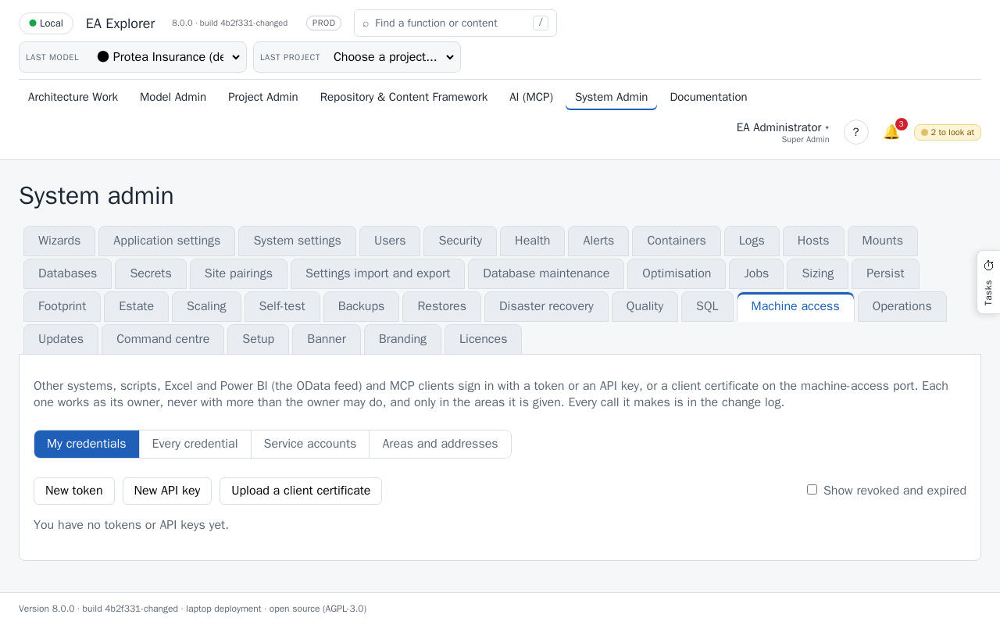

Make a service account
For: Developers, System Admin
An account for another system, then its token or API key.

#/admin/machine-accessWhy do this
A service account is an identity for a system rather than a person. Giving each integration its own, with a token scoped to its job, means you can see what each does and stop one without affecting the others. See Roles and access.
Systems that talk to EA Explorer need identities of their own, limited to what they do, so their access can be watched and stopped without affecting people. This is part of keeping integration safe as well as useful.
In TOGAF terms: Outside the method: this keeps the repository connected to the systems that feed it, so the Architecture Repository stays current. See EA Explorer and the TOGAF Standard.
The goal: Another system has its own account with only the rights it needs.
Before you start You need the Super Admin or IT Admin role.
Steps
- Open System Admin › Machine access, New service account.
- Name it (svc-…) and say what it is for; Save.
- Make it a token or API key; copy the secret, shown once.